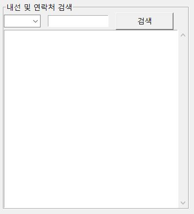

엑셀DB검색

내부 함수
import pandas as pd
from tabulate import tabulate
from tkinter import ttk
from tkinter import scrolledtext
wbf ='site_db_new_v14.xlsx'
data = pd.read_excel(wbf, sheet_name=[0,1], engine = "openpyxl")
data[1]=data[1].applymap(str) #모든 데이터프레임에 데이터를 문자화하여 검색이 가능하도록
data[1]['내선']=data[1]['내선'].str.zfill(4) #데이터 앞에 0 붙이기
def innerline():
datashow = data[1][data[1][chlb.get()].str.contains(str(s1.get()))] #문자로 검색
scr.delete(0.0, END)
scr.insert(INSERT,tabulate(datashow, headers='keys',showindex=False))
datashow.reset_index()
외형
inline_tel=LabelFrame(tab3, text='내선 및 연락처 검색')
inline_tel.grid(column=0, row=2, padx=8, pady=5)
serch_objet=StringVar()
chlb=ttk.Combobox(inline_tel, width=6, textvariable=serch_objet, state='readonly')
chlb['values'] = ('부서', '이름', '내선', '연락처')
chlb.grid(column=0, row=0,sticky='W')
s1=Entry(inline_tel,width=15)
s1.grid(column=1, row=0,sticky='W')
b1 = Button(inline_tel,text="검색",width=12,command=innerline).grid(column=2, row=0,sticky='W')
scr = scrolledtext.ScrolledText(inline_tel, width=44, height=20, wrap=WORD)
scr.grid(column=0,columnspan=4)
scr.config(font=("Consolas", 9))